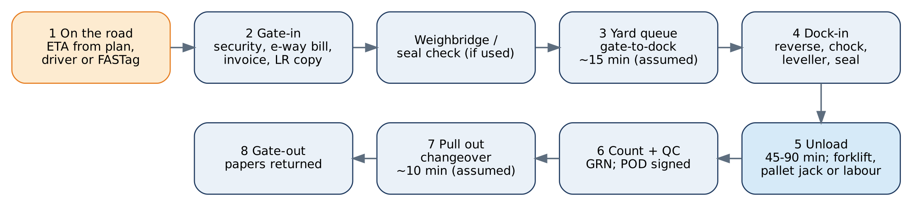

← all hand-ins · download the Word file
FDE ACADEMY | MINI PROJECT 2 | SETUHAUL LOGISTICS
Deliverable 00 (companion to the six hand-ins)
Architect's Review Pack
Design review of both existing designs, grey-area questions for the client, a logistics primer, and the reconciled design the six deliverables follow
Read this first. It explains what we kept from each design, what we changed and why, what we still need the client to answer, and the logistics knowledge behind every rule in the system.
Client: SetuHaul Logistics Pvt. Ltd. (FDE Academy challenge)
Snapshot: 4 August 2026, Jaipur DC and Gurugram Cross-Dock (Asia/Kolkata)
Version: 1.1 | 18 November 2026 (scheduling engine updated to an exact, proven-optimal search; see the v2 change log)
Audience: our FDE team (five members) and the FDE Academy reviewers
Contents
1. Executive summary
1.1 The twelve changes that matter most
1.2 Results we can now show (from the prototype, not from claims)
2. How we approached it
3. Logistics primer: the domain knowledge behind the rules
3.1 A truck's visit, step by step
3.2 Is a dock one-way (unload only) or two-way (load and unload)?
3.3 The three dock types in the data
3.4 The trucks in the data
3.5 The words of appointment scheduling
3.6 Where the minutes go, and why a 60-minute slot is not 60 minutes of capacity
3.7 ETAs in India without GPS
3.8 Money and law that affect the design
3.9 Who is who in this case
4. Review of Doc A: the GitHub L1/L2 design
4.1 What Doc A gets right (keep all of these)
4.2 What to revisit or redesign
5. Review of Doc B: the 16 November LangGraph design
5.1 What Doc B gets right (keep all of these)
5.2 What to revisit or redesign
6. Where the two designs conflict, and what we decided
6.1 Cost comparison (list prices, check before quoting)
7. Grey areas: questions for the client and the Academy
7.1 Slots and appointments
7.2 Docks and capacity
7.3 ETA and driver information
7.4 Priority, fairness and money
7.5 People, escalation and integration
7.6 For the FDE Academy
8. Wow factors, and how the six deliverables fit together
8.1 What goes beyond both designs
8.2 The six hand-ins
9. Sources
We reviewed everything in the package and both of our existing designs. The package is the 10-page brief, the SQLite snapshot (18 tables, 4 views), the database guide and the data dictionary. The designs are Doc A, the GitHub site sdaistudio.github.io/SetuHaul_Logistics (18 pages, an AWS L1/L2 design and a branch-and-bound solver), and Doc B, the "Driver-Exception Agent, Solution Design" of 16 November (LangGraph with two LLM nodes and a greedy planner).
Verdict. Both designs are strong and agree on the most important principle: language at the edges, deterministic code in the middle. Doc A is the deeper engineering piece. Doc B draws the LLM boundary more clearly and maps better to the instructor's asks. But they disagree on eight points a reviewer will probe (hold model, pending expiry, LLM use, long unloads, scheduler, priority policy, weights, stack). Both also miss several logistics realities and data issues that change behaviour. We reconciled them, built a working prototype to settle the disagreements with evidence, and every deliverable now follows one design.
| # | Change | Why (evidence) | Lands in |
|---|---|---|---|
| 1 | Picking an option books it in one checked transaction. Holds exist only while a coordinator decides. | Doc B's extra "reply YES" turn costs a driver on the road one more message. Doc A's 5-minute hold is rarely needed. | 02 D6, 03 |
| 2 | Long unloads are time intervals that may run past the slot end if the dock is free, never two whole slots | Booking two slots for a 75-minute unload wastes 45 dock-minutes each time (Doc B) | 03, 05 |
| 3 | A database trigger forbids overlapping time on one dock (the SQLite stand-in for Postgres EXCLUDE) | The supplied indexes allowed 7 bad bookings in our probe (F09). A simulated feasibility bug was caught by this trigger (test 11). | 01, 05 |
| 4 | Scarcity earmarks: capacity is protected for HIGH/CRITICAL trucks and for any truck whose deadline leaves it few choices | First-come-first-served stranded SHP1012 (13:30 deadline) in our replay. Earmarks prevented it. | 02 D7, 04 |
| 5 | Coordinator-approved atomic swaps, trialled first in a transaction that always rolls back | A CRITICAL load needs a way to move a lower-priority promise, but never by breaking another driver's deadline. Demonstrated in the scenario run. | 02 D7, 04 |
| 6 | Booking health monitor: every dock event or ETA change re-checks all affected bookings | The reefer booking APT1015A was infeasible from 1 Aug 14:00 (F07). The monitor flagged it at 09:16, seven hours before the driver wrote. | 01, 04 |
| 7 | Physical-plausibility checks on ETAs (truck busy on another trip, "departed" before it left) | SHP1018's 12:00 slot was released at 09:45 instead of waiting for a 12:30 no-show (F14) | 01, 03 |
| 8 | Time-travel replay: rewind the snapshot to 08:20 and replay events at their own time | The snapshot has no single "now" (F15). This gives an honest, reproducible scenario run. | 04 |
| 9 | Rules-first language reading. An LLM (Claude Haiku) is called only when the rules fail, with a strict JSON schema. | Same input gives the same output, with fewer moving parts. The LLM costs cents a month either way, so the choice rests on determinism, not money. | 02 D16, 03 |
| 10 | Lean deployment: one small container plus managed Postgres for the pilot. Doc A's AWS design becomes the scale path. | About US$20-30 a month instead of a fixed floor near US$170 before any traffic (section 6) | 03, 06 |
| 11 | Pending decisions get a deadline of min(15 min, slot start - 30 min) | A fixed 20 minutes (Doc A) can leave a coordinator 5 minutes before the truck must leave | 02 D5 |
| 12 | Weights 8:4:2:1, with a sensitivity test against both docs' weights | Today's plan is identical under all three weight sets, so the choice is a policy question, not a technical one | 02 D7, 04 |
| Measure | Result | Source |
|---|---|---|
| Double bookings: 10 drivers, one slot, repeated 50 times | 50 of 50 runs had exactly one winner, 450 clean refusals, 0 errors leaked to drivers | 05 |
| Negative control: the same race with the guards removed | All 10 drivers booked the same slot. The test can fail, so its pass means something. | 05 |
| Random stress: 8 threads x 25 bookings | 0 overlaps, 0 duplicates, 0 incompatible bookings | 05 |
| Scenario run (13 driver conversations, 1 coordinator case) | 10 of 13 resolved without a person. The 3 that reached a person were meant to (safety, no feasible reefer slot, data-conflict approval). Median of 2 driver messages per case. | 04 |
| Data audit | 36 findings, each proven by a query (5 Critical, 15 High). About 15 are new compared with both designs. | 01 |
| Scheduling tool vs dispatch rules (09:45 snapshot) | Our exact engine proves the plan optimal over all 8! job orders after searching 5,425 of them, and it matches the priority + repair first answer. First-come-first-served leaves a deadline truck without a dock. | 04 |
We followed the brief's own flow (Frame, Design, Build, Break, Defend) and kept three questions in front of every decision:
Who owns this decision? The model reads words. Code decides capacity. The database refuses conflicting writes. A person decides safety, penalties and anything with no safe automatic answer. This is the brief's layer table, and the test every design choice had to pass.
Is it a workflow or an agent? Anthropic's guidance (Building effective agents) separates fixed code paths from agents that choose their own steps, and advises the simplest thing that works. Our path is fixed, so it is a workflow. Nothing in it lets a model pick the next tool.
What would prove it? Every claim in the six deliverables points to a query, a test or a transcript line. When the two designs disagreed, we built both options into the prototype and measured them.
IN PLAIN WORDS | An analogy for the whole system Think of a busy hospital outpatient desk. The receptionist (the language layer) listens to patients describe their problem in their own words. The appointment book (the database) never lets two patients have the same doctor at the same time. The triage rules (the scheduling tool) decide who goes first when the queue is long. And the duty doctor (the coordinator) handles emergencies and anything the rules can't settle. A receptionist who invents free appointments, or lets the loudest patient jump the queue, is exactly what we are designing against. |
This section explains the operations the data describes. Every rule in the prototype traces back to one of these realities.

One truck's visit to a distribution centre. Only the dock stage uses the scarce resource; the other stages decide when a truck is really ready for it.
On the road. The plan holds an original ETA. In India, legally moving goods worth more than ₹50,000 needs an e-way bill, which is valid for one day per 200 km of distance for normal cargo, or one day per 20 km for over-dimensional cargo.
Gate-in. Security checks the vehicle number, the e-way bill, the invoice and the lorry receipt (LR, the carrier's consignment note). Some sites also weigh the truck or check its seal. This is why we assume a 15-minute gate-to-dock time that the client must confirm (question Q5).
Yard queue. The truck parks and waits to be called. The snapshot calls this queue_state (WAITING_EARLY, WAITING_LATE, WAITING_DOCK_UNAVAILABLE).
Dock-in. The driver reverses against the dock door. Wheel chocks or a restraint lock the truck, the dock leveller bridges the gap between truck bed and floor, and a dock seal or shelter closes the gap around the door.
Unload. Forklifts or pallet jacks move palletised loads. Loose cartons are unloaded by hand by loading labour (often contract "hamali" crews), which is much slower. expected_unload_min (45-90 minutes in the data) is the planner's estimate of this step.
Count, check and sign. The warehouse counts the goods and records a GRN (goods received note). The driver gets the signed POD (proof of delivery), which the carrier needs to be paid.
Pull out and gate-out. The next truck cannot reverse in until this one leaves and the leveller is reset. We call this changeover and assume 10 minutes (Q4).
IN PLAIN WORDS | Why only one step is scarce A restaurant has many seats in the waiting area but few tables. Guests can wait anywhere; a table can seat one party at a time. The yard is the waiting area, the dock door is the table. A late guest does not need a new waiting chair, they need a new table time, and the table time must not overlap with the next party. |
Physically, every dock door is two-way. The same door can receive a truck (inbound, unloading) or dispatch one (outbound, loading). What makes a door one-way is how the site assigns it:
| Arrangement | How it works | Typical site |
|---|---|---|
| Dedicated receiving doors | Inbound only, on the receiving side of the building | Large distribution centres with separate inbound and outbound flows |
| Dedicated shipping doors | Outbound only, near the despatch area | Same, on the other side |
| Mixed doors | Receiving in the morning, despatch in the afternoon, or by plan | Smaller DCs (Jaipur, with only six doors, is likely mixed) |
| Cross-dock | Inbound doors on one side, outbound on the other. Goods move straight across with little storage. | The Gurugram Cross-Dock in this dataset |
What this means for us. The snapshot only contains receiving appointments. If Jaipur also loads outbound trucks or return loads on the same doors, that capacity is invisible to our scheduler, and we could promise a slot that is really taken by an outbound truck. This is grey-area question Q11, and one of the most important to ask before go-live.
Two related terms. Live unload means the driver waits while the truck is unloaded, which is the case modelled here and the norm for rigid Indian trucks. Drop-and-hook means a trailer is left in the yard and the tractor leaves at once. It only works with detachable trailers (the 40-ft trailers here could, in principle). Side unloading is used for flatbeds and heavy machinery, which are lifted off by crane or a heavy forklift at ground level. That is probably what the heavy dock D6 is.
IN PLAIN WORDS | One-way or two-way, in one line A dock door is like a shop's back door: goods can come in or go out through it, but at any moment it serves one truck, and the shop decides whether that door is "deliveries only" or shared. |
| Dock type | Jaipur door | What is different | Why the rules exist |
|---|---|---|---|
| Standard | D1-D4 (20 t or 25 t) | Dry goods: FMCG, electronics, textiles, auto parts | D1 and D3 are rated 20 t, so a 21 t load (SHP1014) must use D2 or D4 |
| Reefer | D5 | Temperature-controlled door. It is sealed against a cold room so the cold chain is never broken. | Chilled dairy (SHP1015) or frozen foods (SHP1010) unloaded at a normal door warm up while the doors are open (RULE003) |
| Heavy | D6 (35 t, 90-minute slots) | Machinery and construction equipment. Often ground-level with crane or heavy-forklift access. | Loads above 25 t must use it (RULE004). The 90-minute windows match the slower unload. |
Reefer trucks carry their own refrigeration unit, which runs on diesel. So a reefer truck that cannot unload tonight can usually hold temperature overnight in the yard, at a fuel cost, as long as the unit is monitored. This is one of the options our hand-off record gives the coordinator for SHP1015.
| Code | What it is | Payload in data | Plain meaning |
|---|---|---|---|
| 20FT | 20-foot closed-body truck | about 9 t | A city/short-haul box truck |
| 32FT_SXL | 32-foot single-axle | about 15 t | Long body, one rear axle: lighter loads |
| 32FT_MXL | 32-foot multi-axle | about 22 t | Same length, more axles: heavier loads |
| REEFER_32 | 32-foot refrigerated | about 18 t | Insulated body with its own cooling unit |
| HEAVY_40 | 40-foot heavy trailer | about 32 t | Tractor plus trailer, for machinery |
| Term | Meaning | Where it shows in our design |
|---|---|---|
| Appointment / slot | A promised time window on one dock | appointment_slots, one active booking per slot |
| Start window vs fixed start | Can the truck start anywhere inside 10:00-11:00, or must it start at 10:00? | Grey area Q1. The original plan itself puts SHP1016 (ETA 10:30) into a 09:30 heavy slot, which only works if a slot is a window. |
| Grace / no-show | How late a truck may check in before losing the slot (30 min at Jaipur) | Certain-miss rule. SHP1004 at 09:25 for a 09:00 slot is late but inside grace, so it keeps the slot (F19). |
| Early arrival | Allowed up to 60 minutes before the slot (RULE001). It gives no right to jump the queue. | Early flow offers an earlier dock only if nobody is displaced |
| Dwell time | Gate-in to gate-out | Brief metric: average waiting after rescheduling |
| Detention / halting | Waiting beyond the free time, often paid to the carrier | Grey area Q25: rupee cost of waiting per contract |
| Changeover / turn time | Time between one truck leaving and the next starting | 10-minute assumption (Q4) |
A booked 60-minute slot hides three numbers: gate-to-dock (when the truck can arrive at the dock), unload (when the dock is busy), and changeover (when the next truck can start). The snapshot books 75-minute unloads into 60-minute slots (F04). With the 10-minute changeover, the dock is busy for 85 minutes. So each such booking overflows into the next hour, which is exactly what happened on D2 on 4 August (SHP1002 overran and SHP1004 waited in the yard).
FDE NOTE | Rule of thumb we used to size the problem Jaipur has 6 doors open about 13 usable hours (08:00-21:00 starts). At about 70 minutes per truck (60 min unload + 10 min changeover), that is roughly 6 x 13 x 60 / 70, or about 67 truck-starts a day. Across 32 doors the same arithmetic gives about 357 a day against 190-240 appointments, so normal utilisation is about 55-65%. A wave of 20-35 delayed trucks in 30 minutes can still exhaust the next three hours of compatible capacity, especially for reefer and heavy loads, which have one door each. |
| Source | What it gives | Strength | Weakness |
|---|---|---|---|
| Driver declaration | "Reaching 11:20" | Free, immediate, knows local conditions | Optimism, vague phrasing, no proof |
| FASTag toll crossings via ULIP (the government's Unified Logistics Interface Platform) | Toll plaza name, time and direction for a vehicle number | Automatic, cannot be faked by the driver, works where phones lose signal | Only at toll plazas; access needs a ULIP-integrated provider |
| SIM/phone location with consent | Approximate position | No hardware | Consent and accuracy issues |
| Telematics/GPS box | Continuous position | Best accuracy | Not available here ("0 live GPS feeds") |
The brief says there is no GPS, so our design plans on the late edge of each estimate and flags trucks whose ETA fails a plausibility check. FASTag through ULIP is the cheapest real upgrade: it would have caught DRV007's double assignment (F11) at once. It is on the roadmap, not in the prototype.
Detention and halting charges. Indian contracts typically give 2-4 hours of free waiting at loading or unloading, then charge per hour or per day. The rates vary widely: from about ₹200-500 an hour in one industry guide, to "nominal" ₹1,000-1,500 a day reported in trade press. SetuHaul's contracts are not in the data (Q25). If they were, the scheduler could minimise rupees instead of weighted minutes.
E-way bill validity. If a load is held overnight (the reefer case), someone must check the e-way bill. An extension can be requested within 8 hours before or after expiry. We put this in the hand-off record so the coordinator does not forget it.
SetuHaul is a third-party logistics provider (3PL). It coordinates its own and contracted trucks (carriers CAR001-CAR004) for customers ("consignees" such as CareSupply Rajasthan) and runs the destination facilities. That is why the driver chats with SetuHaul, the warehouse coordinator is a SetuHaul employee, and the carrier's dispatcher must be told when a booking is released.
Pages reviewed: system design, solution design, decision register, data audit, problem definition, solver design, client readout and scenario transcript on sdaistudio.github.io/SetuHaul_Logistics.
The control flow is code; "no model chooses a slot, ever." Driver-facing text comes from a reviewed catalogue, and an output guard checks every time and dock. We kept the guard: in our runs it caught two of our own bugs before any driver saw them.
Showing reserves nothing. Every commit re-checks inside the write transaction. Idempotency keys and inbound dedupe are in place.
Coordinator approvals are re-validated (its 21 t-on-20 t refusal). Routing skips vacant contacts and failed channels.
Assumptions are stated back to the driver ("late by one hour read as 11:00"). Priority comes from the shipment record, never from the message.
A serious evaluation habit: golden cases, solver cross-checked against CP-SAT, guardrail tests.
| # | Severity | Issue in Doc A | Evidence | Recommendation |
|---|---|---|---|---|
| A1 | High | About 12 AWS services (API Gateway, SQS FIFO, Lambda, Aurora Serverless v2 + RDS Proxy, EFS, EventBridge, Cognito, SNS, CloudWatch, X-Ray, Bedrock) for roughly one driver message a minute. The page says the stack has not been deployed. | The fixed monthly floor is about US$170 before traffic (section 6). Lambda in a VPC also needs a NAT gateway to reach the WhatsApp API. | Pilot on one container plus managed Postgres. Keep this design as the documented scale path (deliverable 3). |
| A2 | High | The integrity proof runs on SQLite with a single writer (Lambda reserved concurrency 1, SQLite on EFS). The production path (Aurora, advisory lock, EXCLUDE) is untested. | With one writer, a race test passes almost by construction. SQLite's own documentation warns that file locking on network file systems is unreliable. | Run the same race tests on the production engine in CI. We provide the Postgres DDL and a test plan (deliverable 5, section 8). |
| A3 | Medium | Audit A03 lists 7 "unload longer than slot" bookings; only 4 are. | APT1004, APT1007 and APT1020 have 60-minute unloads in 60-minute slots. We reproduced the wrong count of 7 using CAST(julianday-difference x 1440 AS INT), which truncates 60 to 59. | Round minute arithmetic and unit-test the audit queries. |
| A4 | Medium | The audit misses issues that change behaviour | F07 (reefer booking dead since 1 Aug), F08 (historic double booking), F13 (truck departs while inside Jaipur), F14 (no-show caused by the plan), F19 (LATE inside grace), F31 (untyped driver limit), F32 (weight column meaning), plus about 8 more | Merged into our 36-finding audit (deliverable 1) |
| A5 | High | A custom branch-and-bound with look-ahead: impressive, but costly to maintain. Its numbers (offer scores 54,575 vs 66,800) cannot be explained to a warehouse planner. | The brief says to start with a dispatch rule and a transparent score, and move to constraint programming only if you can explain why. On the 09:45 snapshot our priority list plus repair found the same answer as exhaustive search over 8! orders. | Decision (v1.1): keep an exact engine, because the brief asks for an optimal deterministic solver. It is a branch and bound over truck orders, warm-started by the priority list plus repair, which is also the first answer the coordinator sees. It scores plans on the same three plain measures and gives every truck a one-line reason. Exhaustive search confirms it; CP-SAT stays the scale path. |
| A6 | Medium | Weights of 100:40:15:5 (20 to 1 between CRITICAL and LOW) were never validated with the client | Our sensitivity run gives an identical plan under 100:40:15:5, 4:2:1:0.5 and 8:4:2:1 | Use a simple ladder and ask the head of operations (Q24) |
| A7 | Medium | A fixed 20-minute pending TTL | For a slot starting in 25 minutes, the coordinator would answer after the truck has to be told | Deadline = min(15 min, start - 30 min). Shorter than that goes straight to a phone call. |
| A8 | Medium | A "slot is a start window" assumption alongside a 30-minute no-show rule, without saying which one wins | RULE002 vs the plan's own SHP1016/SHP1015 bookings | Ask (Q1). Until then, the truck must gate in by start + grace and may start anywhere in the window. |
| A9 | Medium | Priority is protected mainly by look-ahead ranking plus coordinator swaps | A lower-priority driver can still take capacity a CRITICAL load needs if that slot was shown first | Scarcity earmarks at display time (cheap, explainable); swaps only by coordinator |
| A10 | Low | Location on demand (FASTag, OSRM, buying fixes at ₹1.5) uses simulated corridor data | The site says timings are illustrative | Keep as roadmap; first check ULIP access and cost with the client |
| A11 | Medium | "80% on held-out" is based on 20 messages | A 95% interval around 80% on 20 cases is roughly 56-94% | Report intervals; grow the held-out set from real messages weekly |
| A12 | Low | 18 web pages vs 6 hand-ins | Reviewers grade the six | Consolidated into the six Word deliverables |
The clearest LLM-boundary table of the two designs, step by step, with the reason for each step.
Deterministic language detection by Unicode script plus a Hinglish word list (the instructor's explicit ask). Hinglish replies in Latin script.
Hard filters F1-F9, including facility match, driver window and shipment status, with a source column for each.
A pending-confirmation deadline tied to the slot start (the better rule; we adopted it).
A guardrail table with evidence logged per boundary, and an evals plan built from the seeded cases with a clear error taxonomy.
Honest about scope: it lists what is out of scope rather than ignoring it.
| # | Severity | Issue in Doc B | Evidence | Recommendation |
|---|---|---|---|---|
| B1 | High | An LLM reads every message and writes every reply | Non-deterministic outputs, a model on the critical path of every turn, a larger prompt-injection surface. The money cost is trivial: Claude Haiku 5.5 is listed at US$0.10/0.50 per million input/output tokens. | Rules first. Call the LLM only when the rules return UNKNOWN, with a strict JSON schema, and validate its output. Transactional replies come from the catalogue. |
| B2 | High | Pick, then a 3-minute hold, then "Reply YES to book": two turns to book | The driver is driving. The brief measures turns. Three minutes is too short for someone at a toll plaza. | Picking 1, 2 or 3 is the booking request. One transaction re-checks and books. A hold exists only while a coordinator decides. |
| B3 | High | Long unloads book two consecutive slots | SHP1014's 75-minute unload would block D2 12:00-14:00, wasting 45 minutes. Four long unloads a day at Jaipur waste about three dock-hours, roughly three appointments. | Interval occupancy: the unload may run past the slot end if the dock is free. A DB trigger forbids overlap. |
| B4 | High | Worked example 6.3 cannot be reproduced | It omits SHP1004 and SHP1005 (in the yard) and SHP1007, SHP1010 and SHP1011 (booked, in transit). Hand-worked plans drift from what code would produce. | Let the planner produce the plan; we include its 09:45 output (deliverable 4). |
| B5 | High | For the reefer no-slot case, the option offered to the coordinator is "start after 21:00 with approval" | D5 maintenance runs until 22:00 and Jaipur closes at 22:00, so that option does not exist | Computed options: move the maintenance start to 19:55, hold overnight with the reefer unit running, or divert to the Gurugram reefer door (check road time) |
| B6 | Medium | "Mark it planned (a soft hold)" vs "showing reserves nothing" | Undefined lifetime and enforcement | Earmarks: 20-minute TTL, only for HIGH/CRITICAL or deadline-limited trucks, enforced at commit, never a promise |
| B7 | Medium | Strict priority order (CRITICAL > HIGH > NORMAL > LOW) | In our replay, pure priority order makes HIGH SHP1005, already in the yard, wait 165 minutes, and can strand deadline-limited NORMAL trucks | Priority order plus a repair step that never leaves a truck without a dock if a re-ordering avoids it |
| B8 | Medium | Stack spread: LangGraph, FastAPI, Gradio, AgentCore, Cognito, Redis, LangSmith, Presidio, LiteLLM, Cloudflare, Supabase/Neon | Each is defensible; together they are a lot to build and defend in a mini project | Plain Python state machine, one web service, one database. Adopt the rest when there is a reason. |
| B9 | Medium | The workflow state is stored in the seed's chat_threads.thread_status | Mixes channel state with conversation state; no versioning for concurrent turns | Our own conversations table with an optimistic version check |
| B10 | Low | The deliverables mapping is "provisional" (the brief's images were missing) | The brief lists six: PDS + audit, decision register, prototype, scenario run, integrity proof, client readout | Now aligned (this pack, section 8) |
| Topic | Doc A | Doc B | Reconciled decision | How we settled it |
|---|---|---|---|---|
| Reading the message | Rules; LLM fallback built but off | LLM on every message | Rules first; LLM only when rules fail, schema-validated | Rules read all 13 scenario cases plus Hindi/Hinglish variants; determinism is testable |
| Writing the reply | Reviewed catalogue | LLM fills a template | Catalogue in EN / Hinglish / Hindi, plus output guard | The guard blocked two bad replies in testing |
| Agent framework | Custom Python workflow | LangGraph | Plain Python state machine (LangGraph optional later) | Fewer dependencies; identical behaviour |
| Hold model | 5-min hold after pick | 3-min hold, then YES | Pick = book (one transaction). Holds only for approvals. | One fewer driver turn; race test proves safety without holds |
| Pending deadline | Fixed 20 min | min(15 min, start - 30) | min(15 min, start - 30) | Decision always arrives before the truck must be told |
| Long unloads | Start window, may spill | Two slots | Start window, may spill, interval trigger | Saves about 45 dock-minutes per long unload |
| Planner | Branch-and-bound with look-ahead | Greedy priority plan | Exact branch and bound over truck orders, warm-started by priority list + repair (the first, explainable answer) | Proven optimal on the 09:45 snapshot after 5,425 of 40,320 orders; equals priority + repair and the exhaustive benchmark |
| Priority vs first-come | First valid commit wins; look-ahead; swaps | Plan by priority, then offer | Earmarks for scarce capacity; coordinator-approved atomic swaps that never break deadlines | FCFS stranded a truck; earmarks did not |
| Weights | 100:40:15:5 | 4:2:1:0.5 | 8:4:2:1 plus a sensitivity check | Plan identical under all three |
| "Late by one hour" | State the assumption back | Ask first | State back with a one-tap correction; ask only about which shipment | 2 clarification questions in 13 cases, none wasted |
| Infrastructure | AWS serverless (about 12 services) | FastAPI + AgentCore + Cognito | One container + managed Postgres; AWS path at scale | Cost table below |
| Item | Doc A AWS serverless (fixed floor) | Reconciled lean pilot |
|---|---|---|
| Database | Aurora Serverless v2 minimum 0.5 ACU at about US$0.12 per ACU-hour, about US$43.80/month (scale-to-zero exists but adds resume delay to a chat reply) | Lightsail managed DB from US$15/month, or Neon (free tier; Launch at US$0.106 per compute-hour, no minimum) |
| Connection pooling | RDS Proxy for Serverless v2: 8-ACU minimum, about US$87.60/month | Not needed (one service, pooled connections) |
| Network | NAT gateway in Mumbai at US$0.056/hour, about US$40/month plus data | None (public egress from the container) |
| Compute | Lambda, SQS, EventBridge, API Gateway: small at this volume | Lightsail instance, US$7-12/month (1-2 GB RAM) |
| Same for both. Driver-initiated replies: 1,000 free per number per month from 1 Oct 2026, then about ₹0.145 each; proactive utility templates about ₹0.145 each. A few hundred rupees a month at this volume. | Same | |
| LLM | Bedrock (fallback off) | Claude Haiku fallback only: well under US$1/month at this volume |
| Floor before traffic | about US$170/month | about US$22-30/month |
FDE NOTE | Why cost is not the main argument At this volume both designs are cheap in absolute terms. The real cost of Doc A's stack is that the path we tested (SQLite, one writer) is not the path we would run (Aurora, many writers). The lean design runs the same engine in demo and production, so the integrity proof transfers. |
The brief answers none of these. Each comes with our working assumption, so the build is never blocked, and with the data evidence that raised it.
| Q | Question | Why it matters | Our working assumption | Evidence |
|---|---|---|---|---|
| Q1 | Is a slot a start window (start any time inside it) or a fixed start with a 30-minute check-in grace? | Decides who is a no-show and when a slot is free | Start window; truck must gate in by start + grace | Original plan puts SHP1016 (ETA 10:30) into a 09:30 slot; RULE002 |
| Q2 | May an unload run past its slot end, or must long loads book two slots? | 45 dock-minutes per long unload | May run past, if the dock is free | F04, F05 |
| Q3 | Is a start at exactly 21:00 allowed without approval? | Five published slots start at 21:00 | Needs approval (strict reading) | F20 |
| Q4 | Does expected_unload_min include docking and paperwork? What is the changeover between trucks? | Every planned start depends on it | Unload only; 10-minute changeover | F04 |
| Q5 | Gate-to-dock time per facility (gate checks, weighbridge)? | When a truck is really ready | 15 min from the road; 10 min from the yard | None in data |
| Q6 | May an early truck be unloaded early when a dock is idle? | Uses idle capacity | Yes, if nobody is displaced | SHP1003 |
| Q7 | Which grace value wins: facilities.checkin_grace_min or the NO_SHOW_GRACE_MIN rule? | Two sources of truth | The rule table | F21 |
| Q8 | When are the next day's slots published? | "First slot tomorrow" cannot be offered | Escalation states the gap | F23 |
| Q | Question | Why it matters | Our working assumption | Evidence |
|---|---|---|---|---|
| Q9 | Does max_vehicle_weight_kg mean payload, gross vehicle weight or leveller rating? | Under the literal meaning every loaded 32-ft MXL is over every standard door | Payload | F32 |
| Q10 | May a standard load use an idle heavy or reefer door (a "flex dock")? | Could absorb a wave | No, unless a coordinator approves | Config flag |
| Q11 | Do Jaipur's doors also load outbound or return trucks? | Hidden capacity use: we could promise a door that is really busy | Receiving only | Data has inbound only |
| Q12 | Are unloading crews or forklifts a separate limit? How many per shift? | A free door with no crew is not free | Doors are the only limit | Brief lists "labour and equipment" as scarce |
| Q13 | Can planned maintenance (D5, 18:00-22:00) be moved, and who decides? | It is the only way the reefer unloads tonight | Coordinator decides; we compute the needed shift | DEVT002 |
| Q14 | Who updates slot and dock status after a breakdown, and how fast? | Slots stayed OPEN on a broken door | Derive from events; never trust slot status alone | F02, F03 |
| Q | Question | Why it matters | Our working assumption | Evidence |
|---|---|---|---|---|
| Q15 | Can we use any location source (ULIP FASTag, telematics, driver location share)? Budget? | Turns guesses into evidence | Not in the pilot | Brief: 0 GPS feeds |
| Q16 | When a driver says "late by one hour", relative to what: the slot, the plan or now? | A wrong anchor shifts every option | Their slot if they have one, otherwise the plan; stated back | THR003, MSG006 |
| Q17 | Is "leave by 1:30" a gate-out time? | Changes feasible slots by about an hour | Yes: "leave" means gate-out, stored with its type | F31 |
| Q18 | Do dispatchers or helpers message on a driver's behalf? Are phones shared? | Identity comes from the phone number | One phone per driver | drivers.phone unique |
| Q19 | Who is driving VEH008 (SHP1007), and did VEH001 really leave Neemrana at 08:15? | Both ETAs are unreliable until answered | Confidence lowered; dispatch alerted | F11, F13 |
| Q20 | Do drivers use other languages (Marathi, Gujarati, Punjabi) or voice notes? | Coverage of the language layer | Other languages and voice go to the LLM fallback or a person | None |
| Q | Question | Why it matters | Our working assumption | Evidence |
|---|---|---|---|---|
| Q21 | Who sets priority_code, and can it change during the day? | It ranks scarce capacity | Set by planning; not by the chat | Priority claims in chat are ignored |
| Q22 | May a CRITICAL load move a confirmed lower-priority booking? Minimum gain? How often can one truck be moved? Any compensation? | Fairness and trust | Only by coordinator, never breaking a deadline, at most once per truck per day | Scenario C10 |
| Q23 | Does a truck already in the yard outrank a booked truck still on the road? | Yard dwell vs promises | No, promises are kept; the yard truck gets the next free door | THR007 policy |
| Q24 | Which waiting weights does the business want? | Ranks trade-offs | 8:4:2:1; plan unchanged under alternatives today | Sensitivity run |
| Q25 | What detention free time and rates are in carrier contracts? | Lets the plan minimise rupees, not minutes | Not modelled | Not in data |
| Q26 | Do any consignees have hard cut-offs (production lines, hospital stock)? | Turns priority into deadlines | None known | Not in data |
| Q | Question | Why it matters | Our working assumption | Evidence |
|---|---|---|---|---|
| Q27 | What is the coordinator's response SLA for approvals? Who covers Gurugram at night? | Holds expire; night escalations had nowhere to go | 15 min max; vacant roles skipped; shift manager fallback | F29 |
| Q28 | Must the warehouse confirm every reschedule, or only exceptions? | Coordinator load in a wave | Only exceptions (after 21:00, data conflict, swaps) | Seed has chat-made PENDING bookings |
| Q29 | Who owns safety incidents per facility and shift, and what may the agent say? | Duty of care | Shift manager; agent says "safety first, call 112", stops scheduling talk | Scenario C12 |
| Q30 | Coordinators' preferred channel: e-mail, phone, WhatsApp group? | Speed of hand-off | Dashboard + e-mail; phone for CRITICAL | F29 |
| Q31 | Which system is the record for appointments: ours, the WMS or the warehouse scheduler? | Two writers mean two truths | Ours, with warehouse notices through an outbox | appointments.warehouse_confirmation_ref |
| Q32 | How fresh are gate and yard events: real time or batch? | Stale yard data gives wrong queue answers | Real time | F15: check-ins end at 09:30 |
| Q33 | How long may chat text and phone numbers be kept (India's DPDP Act, 2023)? | Privacy compliance | Minimum retention; no phone or licence in model prompts | Deliverable 3, section 10 |
| Q | Question | Our working assumption |
|---|---|---|
| Q34 | Is a scripted, reproducible replay acceptable as the "recorded or scripted" scenario run? | Yes: the brief allows "recorded or scripted" |
| Q35 | Is SQLite acceptable for the integrity proof if production is Postgres? | Yes, with the Postgres DDL and test plan included |
| Q36 | May we add tables to the schema? | Yes, additions only; the supplied snapshot is never modified |
| Q37 | Is an exact branch and bound over truck orders, with a transparent first answer and a reason per truck, acceptable instead of CP-SAT for the optional tool? | Yes: it is proven optimal on our snapshot, checked against exhaustive search, and explains every truck; CP-SAT remains the scale path |
WOW FACTOR | Twelve things a reviewer has not seen twice
|
| # | Deliverable | What it proves | Key evidence inside |
|---|---|---|---|
| 1 | Problem Definition Sheet and data audit | Facts vs estimates vs assumptions vs unknowns; 36 data issues, each with a query | Query results; probe of the supplied indexes |
| 2 | Decision register | All 13 brief decisions plus 8 of our own, each with a reason and evidence | Links to tests and transcript lines |
| 3 | Working prototype | Conversation layer, tools and state; library versions | Code walk-through; how to run |
| 4 | Scenario run | The 7 must-show items, ending in escalation; plus the scheduling tool | Transcript, metrics, Gantt charts |
| 5 | Integrity proof | Competing requests cannot double-book | 50 x 10 race; negative controls; stress test; guard tests |
| 6 | Client readout | Plain-language policy, limits and open risks for the head of operations and the warehouse planner | Four pages, no jargon |
FDE Academy, SetuHaul Logistics: FDE Challenge Project Brief (10 pages) and the database guide and data dictionary supplied with it.
Doc A: https://sdaistudio.github.io/SetuHaul_Logistics/ (system-design, design, decisions, audit, problem, solver, readout and scenarios pages).
Doc B: "SetuHaul Driver-Exception Agent, Solution Design (Mini Project 2)", 16 Nov 2026 (team document).
Anthropic, Building effective agents; SQLite documentation on partial indexes; Google OR-Tools CP-SAT; ATRI detention research (all cited in the brief).
WhatsApp pricing: https://developers.facebook.com/docs/whatsapp/pricing and https://m.aisensy.com/blog/whatsapp-pricing-update-october-2026/ ; interactive message limits: https://developers.facebook.com/docs/whatsapp/guides/interactive-messages/ and https://developer.exotel.com/docs/whatsapp-support/interactive-messages
AWS: Aurora Serverless v2 scaling to zero (https://aws.amazon.com/about-aws/whats-new/2024/11/amazon-aurora-serverless-v2-scaling-zero-capacity), Aurora pricing guide (https://wring.co/blog/aws-aurora-pricing-guide), RDS Proxy minimum (https://repost.aws/questions/QUj6Fg7zh1RPeI2S1AwWPD3Q), NAT gateway in Mumbai (https://www.cloudkeeper.com/insights/blog/aws-cloud-cost-optimization-nat-gateway), Lightsail pricing (https://aws.amazon.com/lightsail/pricing/).
Neon pricing: https://neon.com/blog/why-we-no-longer-lock-premium-features ; Claude Haiku 5.5 pricing: https://www.developersdigest.tech/models/claude-haiku-5-5 (citing platform.claude.com).
E-way bill validity and extension: https://www.taxmanagementindia.com/visitor/detail_manual.asp?ID=1986 and https://lorrycare.com/blog/how-to-avoid-eway-bill-expiry-penalty
Detention and halting charges in India: https://truckguru.co.in/blog/?p=1867 , https://indiaseatradenews.com/from-idle-fleets-to-streamlined-operations-solving-indias-truck-detention-crisis/ , https://www.fr8.in/specialHaltingTerms.html
FASTag and ULIP tracking: https://lorrycare.com/fastag-tracking and https://mastersindia.co/vehicle-tracking/